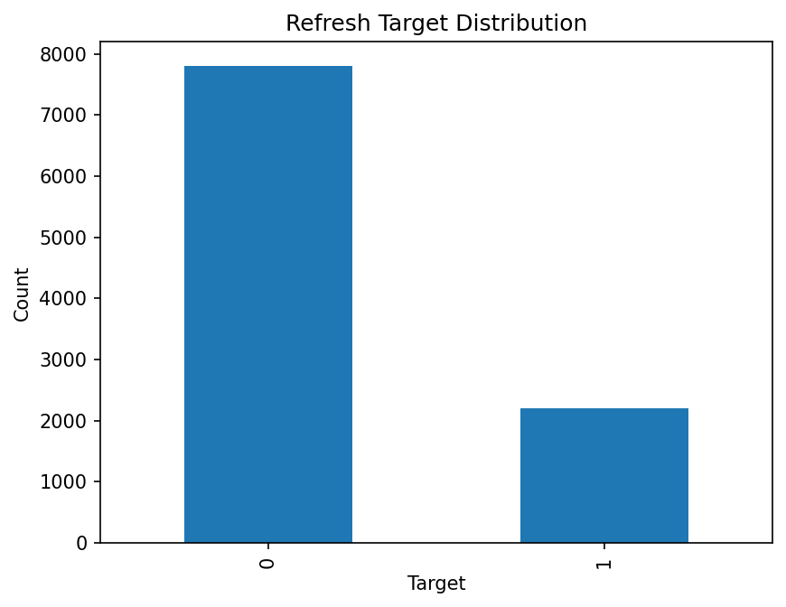
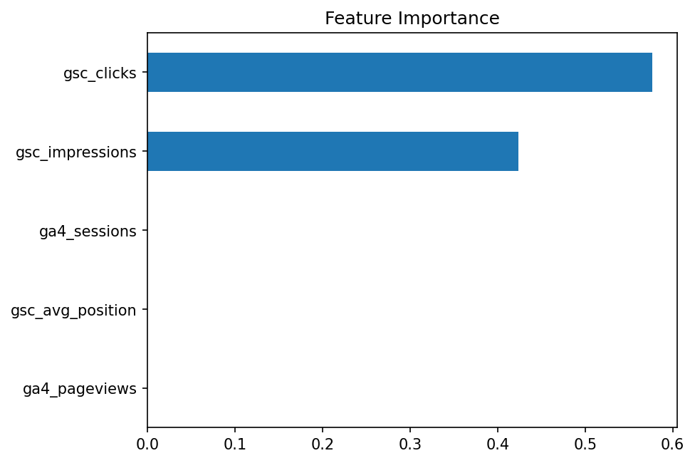

FlyRank Machine Learning Internship — Capstone
Search Intelligence for Content Refresh Prioritization Using Search Performance Signals
Abstract
This study investigates whether search performance and user engagement signals—impressions, clicks, average position, pageviews, and sessions—can identify webpages that should be prioritized for content refresh. Using a mid-panel month (March 2026) of the FlyRank Internship Warehouse dataset, filtered to rows with confirmed search and analytics access, a proxy refresh-priority label was built from search impressions and click-through rate, and a Decision Tree classifier was trained against a rule-based baseline that uses the same thresholds as the label, on an identical 80/20 split. Because the baseline is constructed from the exact same rule as the label, it scores a trivial 100% on every metric by definition, not by predictive skill. The Decision Tree, which was never given the rule directly and only saw the five raw signals, still reconstructed the label with 98.45% accuracy and a 96.4% F1 score. This shows the label is highly learnable from the underlying signals, but the result should be read cautiously: two of those signals (impressions and clicks) are the same values the label's CTR threshold is computed from, so this is closer to a consistency check than proof of independent predictive power. The model is intended strictly as a decision-support signal that helps SEO teams focus manual review on high-impression, low-click pages rather than reviewing every page individually.
Introduction
Research question: Can search performance and user engagement metrics be used to identify webpages that should be prioritized for content refresh?
Business decision: Content teams and SEO specialists currently review pages manually, one at a time, with no systematic way to decide which pages deserve attention first. This project supports that decision by ranking pages using search and engagement signals, so teams can focus limited review time on the highest-priority content rather than working through every page.
Data
Dataset release
FlyRank Internship Warehouse (public internship release), hosted on Hugging Face.
Tables used
fact_content_daily_performance (primary), dim_content (reference only).
Time window
March 2026 (month=2026-03), a mid-panel month, per internship guidance to avoid the outcome-window risk of the final sampled month.
Sample size
10,000 rows × 31 columns, read from the Hugging Face-hosted Parquet partition via DuckDB, filtered to rows with confirmed GSC and GA4 access.
Excluded
The final month of the dataset (held out as a sealed test window to avoid leakage), rows without confirmed search or analytics access, and all client identifiers, URLs, search queries, and private or credential-bearing fields.
Public-safe wording
No client names, domains, URLs, search queries, or credentials appear anywhere in this paper or its source notebook.
Methodology
-
Assumptions
Search performance and engagement metrics are assumed to contain useful signal for identifying pages worth reviewing for refresh. The model is designed as a decision-support tool, not an automated decision-maker.
-
Features
gsc_impressions,gsc_clicks,gsc_avg_position(derived from the warehouse's position sum),ga4_pageviews,ga4_sessions— each is knowable at the moment a refresh decision would be made, so none introduces future information. -
Label definition
A page is labeled a refresh opportunity when it has above-median impressions (median = 126.0) and a click-through rate at or below the median (median CTR ≈ 0.28%). CTR is computed as
gsc_clicks / gsc_impressions. Of the 10,000 sampled rows, 7,806 were labeled 0 and 2,194 were labeled 1. -
Baseline
The baseline applies the same median-impressions, median-CTR rule used to define the label itself, rather than an independent rule. This keeps the comparison consistent, but it also means the baseline's score reflects the label's own definition, not independent predictive skill — addressed directly in Results.
-
Validation design
Both the baseline and the Decision Tree were evaluated on the same 80/20 train-test split (
random_state=42) of the same sampled dataset and feature set. -
Leakage checks
No future performance metrics or manually assigned labels were used as inputs. Client and content identifiers were excluded before feature construction, since they are pseudonymous grouping keys, not predictive signals.
Results
A Decision Tree classifier (max_depth=5) was trained on the selected features and compared with the rule-based baseline on the same test split.
| Model | Accuracy | Precision | Recall | F1 Score |
|---|---|---|---|---|
| Baseline Rule | 100.0% | 100.0% | 100.0% | 100.0% |
| Decision Tree | 98.45% | 100.0% | 93.0% | 96.4% |
Reading these numbers honestly: the baseline's perfect 100% across every metric isn't a finding — it's built into how it was constructed. The baseline uses the exact same impressions/CTR thresholds that define the label itself, so it is, by design, comparing the label to a copy of itself. The more informative number is the Decision Tree's: trained only on the five raw signals and never given the threshold rule directly, it reconstructed the same label with 98.45% accuracy and a 96.4% F1 score. That's a real result, but a modest one — two of its five inputs (impressions and clicks) are the same values the label's CTR threshold is computed from, so this demonstrates the label is learnable from its own underlying signals more than it demonstrates independent predictive power on unseen relationships.


Limitations
- Uses only historical search and engagement data available in the FlyRank internship dataset, filtered to rows with confirmed GSC and GA4 access.
- The target is a rule-based proxy (above-median impressions, at-or-below-median CTR), not an actual editorial refresh decision, and should be read as a proxy rather than ground truth.
- The baseline is defined by the same rule as the label, so its 100% score reflects that construction rather than predictive skill; it is not an independent point of comparison.
- Two of the Decision Tree's five features (impressions, clicks) are the same values the label's CTR threshold is derived from, so its high accuracy is closer to a consistency check than a test of independent predictive power.
- Evaluated on a single sampled month and split; not validated across different time periods.
- Findings are observed and directional. They support a decision, they do not prove causation, and they make no claim about how any search engine's ranking algorithm behaves.
Ranked Recommendations
The model ranks pages that receive relatively high search visibility but capture few clicks. These are directional candidates for content review, not guaranteed optimization opportunities, and should be validated by SEO specialists before action is taken.
- 1
Review pages with high impressions and very low click-through rate first.
- 2
Improve titles and meta descriptions where search visibility exists but click-through is weak.
- 3
Refresh outdated content while preserving existing rankings.
- 4
Monitor pages after updates before making further changes.
- 5
Re-score pages periodically as new performance data becomes available.
Reproducibility
The full workflow—data access, feature construction, baseline scoring, model training, and evaluation—is implemented in work/notebooks/capstone.ipynb in the project repository. The notebook downloads the March 2026 partition of fact_content_daily_performance from the FlyRank Internship Warehouse on Hugging Face via an authenticated read token, filters to rows with confirmed GSC and GA4 access, engineers the features and label described above, and trains the baseline and Decision Tree on an identical split for direct comparison. Running the notebook top to bottom reproduces every number reported on this page.